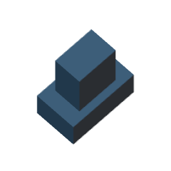
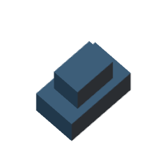
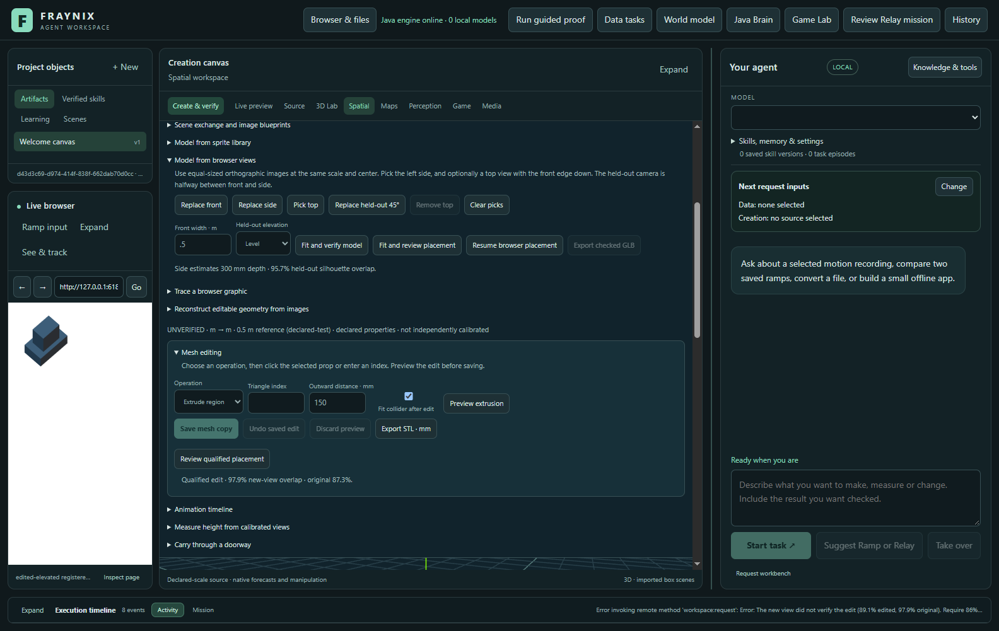
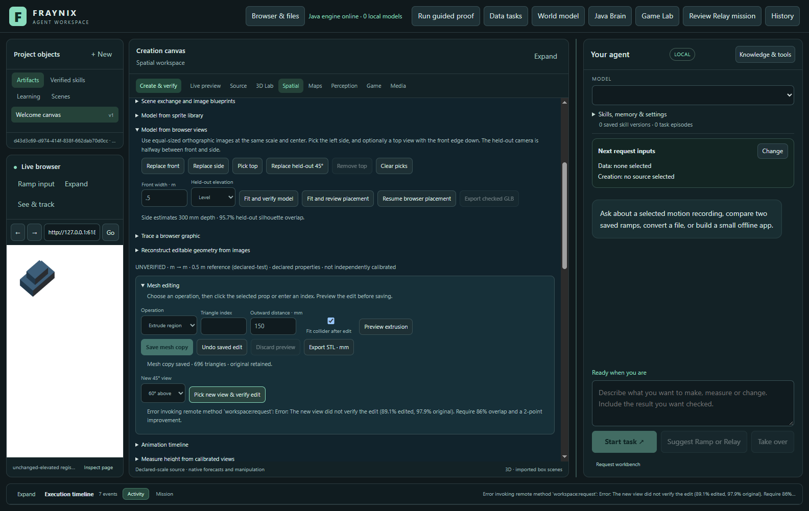
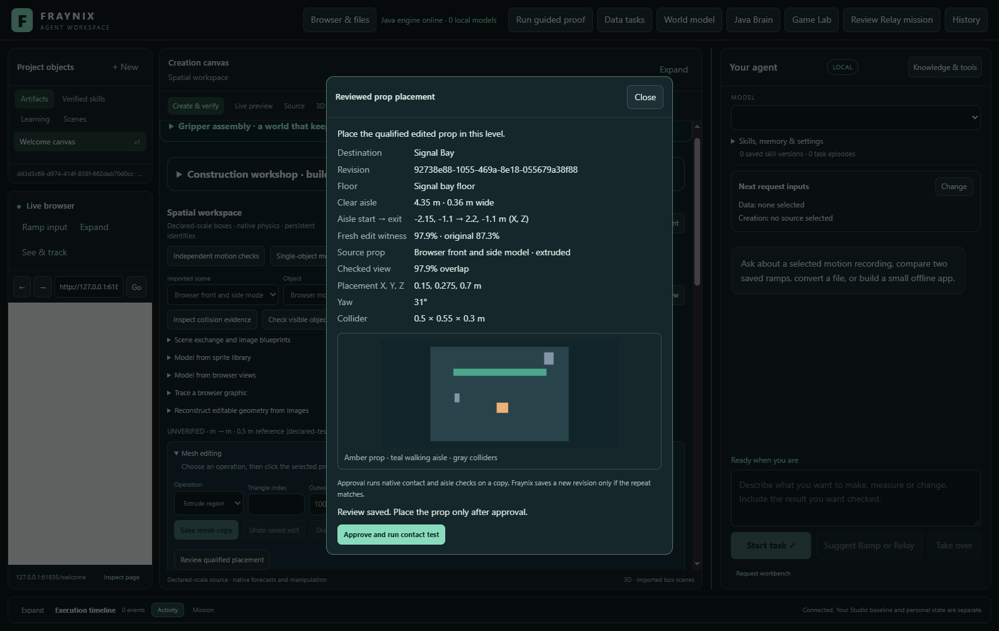

Qualify a mesh edit with a new browser view
An edited mesh earns its own evidence by explaining a new observation better than the original.
The taller reference scored 97.9% edited and 87.3% original. The unchanged control favored the original, so the edit was refused for that image.

Independently authored taller reference

Unchanged control at the same new angle

The edit qualifies with the fresh reference

A fresh image of the unchanged prop refuses the edit

The placement review carries the measured evidence
System files
Open source